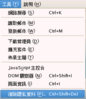

COSA活動記錄簿
留下COSA所辦活動之紀錄
首頁
相簿目錄
::
最新上傳
::
最新留言
::
熱門圖片
::
最高評分
最高評分
77 次觀看
(7 個評分)
121 次觀看
(7 個評分)
113 次觀看
(7 個評分)
97 次觀看
(7 個評分)
96 次觀看
(7 個評分)

97 次觀看
(7 個評分)
109 次觀看
(7 個評分)
92 次觀看
(7 個評分)
翔威展場
127 次觀看
(7 個評分)
193 次觀看
(8 個評分)
97 次觀看
(8 個評分)
122 次觀看
(8 個評分)
752 張圖片，共 63 頁
1
10
11
12
13
14
15
16
17
18
19
63

.jpg "檔案名稱=1 (11).jpg
檔案大小=84KB
圖片尺寸=800x600
加入日期=四月 24, 2007")